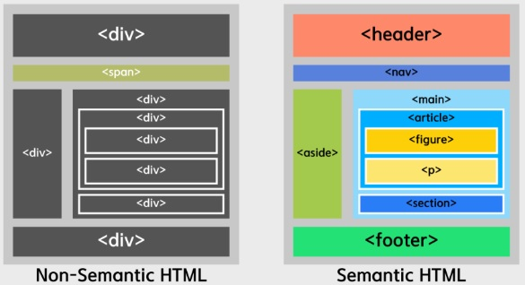

semantic 태그
태그가 단순히 다큐먼트의 구조적 기능에만 국한 된 것이 아니라 태그를
참조함에 있어서 의미를 부여할 수 있는 기능
검색 엔진 기계 입장에서 콘텐츠를 더 쉽게 이해할 수 있게 하여 SEO
(검색엔진최적화) 성능을 더욱 향상시킬 수 있다.

Item 1
semantic 태그는 웹페이지에 의미를 부여할 수 있다.
Item 2
semantic 태그는 검색시 정보를 제공할 수 있다.
Item 3
semantic 태그는 웹전체가 지능형 웹을 구성할 수 있게
한다.